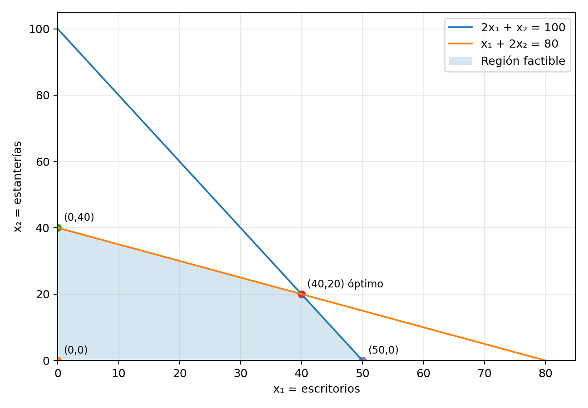

Variables de decisión
Cantidades que necesitamos determinar.
Módulo 1 · Investigación de Operaciones
Decisiones de producción con recursos limitados.
Fundamentos
La programación lineal permite elegir la mejor alternativa cuando existen recursos limitados. Busca maximizar una ganancia o minimizar un costo, respetando las condiciones del problema.
Cantidades que necesitamos determinar.
Expresión que deseamos maximizar o minimizar.
Límites de recursos y condiciones que deben cumplirse.
Impide valores negativos cuando representan cantidades físicas.
Conjunto de soluciones que satisface todas las restricciones.
Solución factible que produce el mejor valor de la función objetivo.
Aplicación
Una empresa fabrica escritorios y estanterías. Cada producto requiere horas de carpintería y acabado, y genera una ganancia.
| Recurso o ganancia | Escritorio | Estantería | Disponible semanal |
|---|---|---|---|
| Carpintería | 2 horas | 1 hora | 100 horas |
| Acabado | 1 hora | 2 horas | 80 horas |
| Ganancia por unidad | Q300 | Q250 | — |
La empresa necesita determinar cuánto producir para obtener la mayor ganancia semanal.
x₁: cantidad de escritorios.
x₂: cantidad de estanterías.
Carpintería: cada escritorio requiere dos horas y cada estantería una; existen 100 horas disponibles.
Acabado: cada escritorio requiere una hora y cada estantería dos; existen 80 horas disponibles.
No negatividad: las cantidades producidas no pueden ser negativas.
Desarrollo
Como existen dos variables, podemos representar el modelo en un plano cartesiano.
Convertimos temporalmente las restricciones en igualdades.
| Recta | Si x₂ = 0 | Si x₁ = 0 |
|---|---|---|
| 2x₁ + x₂ = 100 | x₁ = 50 → (50, 0) | x₂ = 100 → (0, 100) |
| x₁ + 2x₂ = 80 | x₁ = 80 → (80, 0) | x₂ = 40 → (0, 40) |
Resolvemos el sistema formado por las dos rectas:
De la primera ecuación despejamos x₂ = 100 − 2x₁ y sustituimos en la segunda:
Sustituimos el resultado en la expresión despejada:
La intersección es (40, 20).
El origen satisface ambas restricciones:
Por eso seleccionamos, para cada recta, el lado que contiene el origen y conservamos únicamente los valores no negativos.
Los vértices de la región factible son (0, 0), (0, 40), (40, 20) y (50, 0).

Sustituimos cada vértice en Z = 300x₁ + 250x₂:
| Vértice | Sustitución | Ganancia |
|---|---|---|
| (0, 0) | 300(0) + 250(0) | Q0 |
| (0, 40) | 300(0) + 250(40) | Q10,000 |
| (40, 20) | 300(40) + 250(20) | Q17,000 |
| (50, 0) | 300(50) + 250(0) | Q15,000 |
La mayor ganancia se obtiene en (40, 20).
Interpretación
La empresa debe producir 40 escritorios y 20 estanterías por semana.
Carpintería: 2(40) + 20 = 100 horas.
Acabado: 40 + 2(20) = 80 horas.
Se utilizan completamente ambos recursos.
El problema tiene una solución óptima única. La región factible existe y está acotada, y ninguno de los otros vértices alcanza Q17,000.
El mismo modelo se desarrollará mediante tablas e iteraciones en la página de Método Simplex, para comprobar algebraicamente el resultado.
Cierre
La programación lineal permite organizar una decisión de producción mediante un objetivo y restricciones. En este caso, la evaluación de la región factible determina que fabricar 40 escritorios y 20 estanterías aprovecha todos los recursos y genera la mayor ganancia semanal.